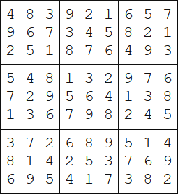
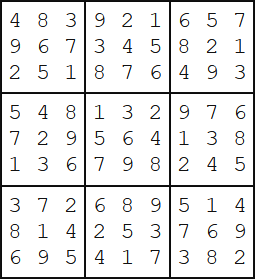

Su Doku
Problem 96
Su Doku (Japanese meaning number place) is the name given to a popular puzzle concept. Its origin is unclear, but credit must be attributed to Leonhard Euler who invented a similar, and much more difficult, puzzle idea called Latin Squares. The objective of Su Doku puzzles, however, is to replace the blanks (or zeros) in a 9 by 9 grid in such that each row, column, and 3 by 3 box contains each of the digits 1 to 9. Below is an example of a typical starting puzzle grid and its solution grid.
 
A well constructed Su Doku puzzle has a unique solution and can be solved by logic, although it may be necessary to employ "guess and test" methods in order to eliminate options (there is much contested opinion over this). The complexity of the search determines the difficulty of the puzzle; the example above is considered easy because it can be solved by straight forward direct deduction.
The 6K text file, sudoku.txt (right click and 'Save Link/Target As...'), contains fifty different Su Doku puzzles ranging in difficulty, but all with unique solutions (the first puzzle in the file is the example above).
By solving all fifty puzzles find the sum of the 3-digit numbers found in the top left corner of each solution grid; for example, 483 is the 3-digit number found in the top left corner of the solution grid above.